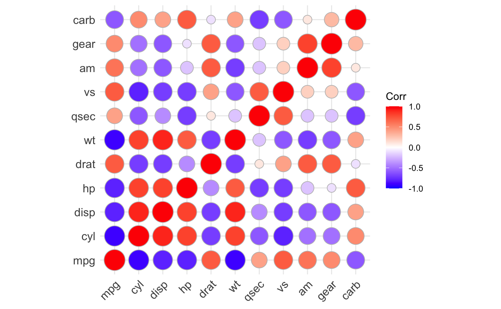
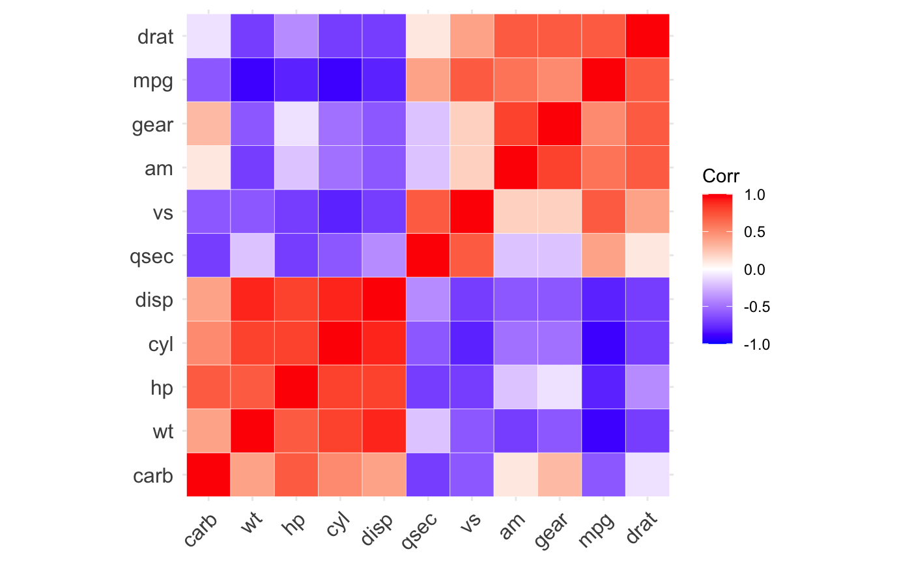
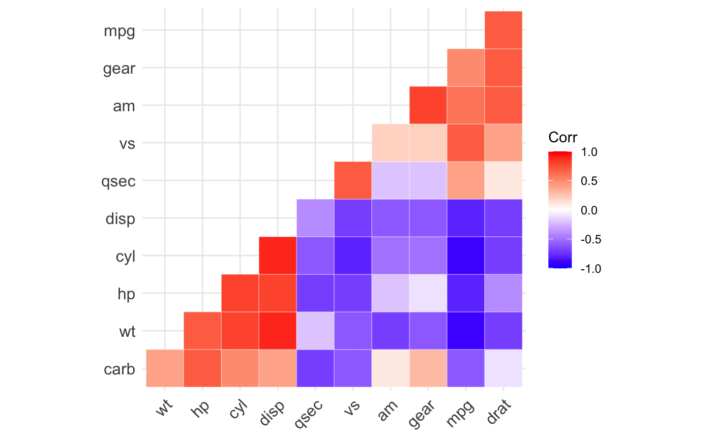
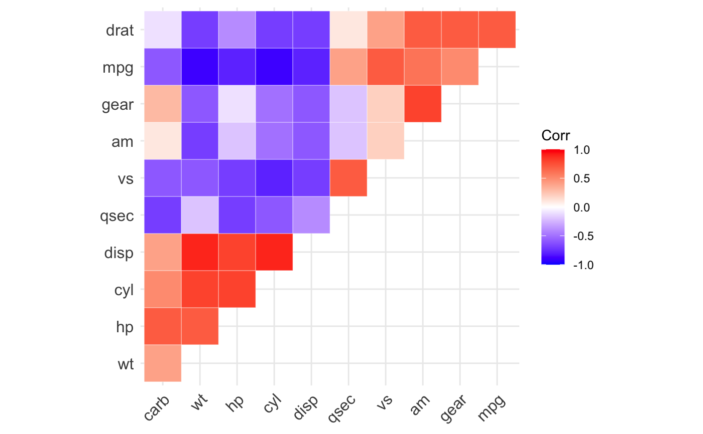
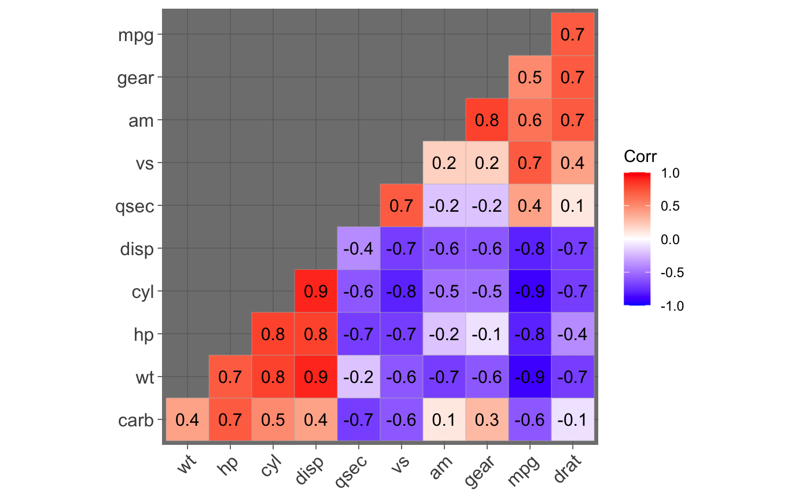
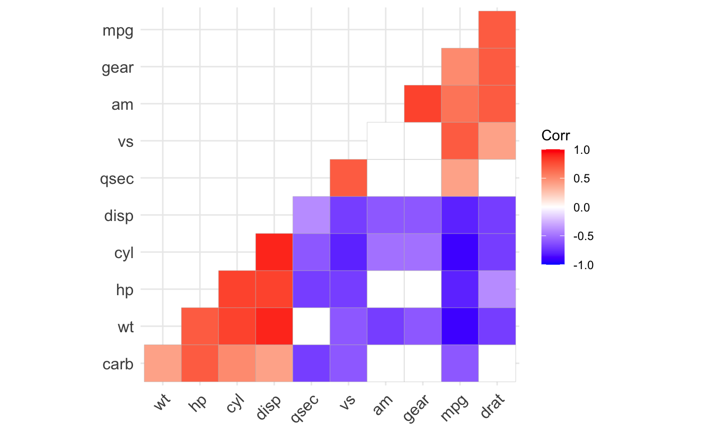

Visualization of a correlation matrix using ggplot2
ggcorrplot.Rdggcorrplot(): A graphical display of a correlation matrix using ggplot2.
cor_pmat(): Compute a correlation matrix p-values.
ggcorrplot(corr, method = c("square", "circle"), type = c("full", "lower", "upper"), ggtheme = ggplot2::theme_minimal, title = "", show.legend = TRUE, legend.title = "Corr", show.diag = FALSE, colors = c("blue", "white", "red"), outline.color = "gray", hc.order = FALSE, hc.method = "complete", lab = FALSE, lab_col = "black", lab_size = 4, p.mat = NULL, sig.level = 0.05, insig = c("pch", "blank"), pch = 4, pch.col = "black", pch.cex = 5, tl.cex = 12, tl.col = "black", tl.srt = 45, digits = 2) cor_pmat(x, ...)
Arguments
| corr | the correlation matrix to visualize |
|---|---|
| method | character, the visualization method of correlation matrix to be used. Allowed values are "square" (default), "circle". |
| type | character, "full" (default), "lower" or "upper" display. |
| ggtheme | ggplot2 function or theme object. Default value is `theme_minimal`. Allowed values are the official ggplot2 themes including theme_gray, theme_bw, theme_minimal, theme_classic, theme_void, .... Theme objects are also allowed (e.g., `theme_classic()`). |
| title | character, title of the graph. |
| show.legend | logical, if TRUE the legend is displayed. |
| legend.title | a character string for the legend title. lower triangular, upper triangular or full matrix. |
| show.diag | logical, whether display the correlation coefficients on the principal diagonal. |
| colors | a vector of 3 colors for low, mid and high correlation values. |
| outline.color | the outline color of square or circle. Default value is "gray". |
| hc.order | logical value. If TRUE, correlation matrix will be hc.ordered using hclust function. |
| hc.method | the agglomeration method to be used in hclust (see ?hclust). |
| lab | logical value. If TRUE, add correlation coefficient on the plot. |
| lab_col, lab_size | size and color to be used for the correlation coefficient labels. used when lab = TRUE. |
| p.mat | matrix of p-value. If NULL, arguments sig.level, insig, pch, pch.col, pch.cex is invalid. |
| sig.level | significant level, if the p-value in p-mat is bigger than sig.level, then the corresponding correlation coefficient is regarded as insignificant. |
| insig | character, specialized insignificant correlation coefficients, "pch" (default), "blank". If "blank", wipe away the corresponding glyphs; if "pch", add characters (see pch for details) on corresponding glyphs. |
| pch | add character on the glyphs of insignificant correlation coefficients (only valid when insig is "pch"). Default value is 4. |
| pch.col, pch.cex | the color and the cex (size) of pch (only valid when insig is "pch"). |
| tl.cex, tl.col, tl.srt | the size, the color and the string rotation of text label (variable names). |
| digits | Decides the number of decimal digits to be displayed (Default: `2`). |
| x | numeric matrix or data frame |
| ... | other arguments to be passed to the function cor.test. |
Value
ggcorrplot(): Returns a ggplot2
cor_pmat(): Returns a matrix containing the p-values of correlations
Examples
# Compute a correlation matrix data(mtcars) corr <- round(cor(mtcars), 1) corr#> mpg cyl disp hp drat wt qsec vs am gear carb #> mpg 1.0 -0.9 -0.8 -0.8 0.7 -0.9 0.4 0.7 0.6 0.5 -0.6 #> cyl -0.9 1.0 0.9 0.8 -0.7 0.8 -0.6 -0.8 -0.5 -0.5 0.5 #> disp -0.8 0.9 1.0 0.8 -0.7 0.9 -0.4 -0.7 -0.6 -0.6 0.4 #> hp -0.8 0.8 0.8 1.0 -0.4 0.7 -0.7 -0.7 -0.2 -0.1 0.7 #> drat 0.7 -0.7 -0.7 -0.4 1.0 -0.7 0.1 0.4 0.7 0.7 -0.1 #> wt -0.9 0.8 0.9 0.7 -0.7 1.0 -0.2 -0.6 -0.7 -0.6 0.4 #> qsec 0.4 -0.6 -0.4 -0.7 0.1 -0.2 1.0 0.7 -0.2 -0.2 -0.7 #> vs 0.7 -0.8 -0.7 -0.7 0.4 -0.6 0.7 1.0 0.2 0.2 -0.6 #> am 0.6 -0.5 -0.6 -0.2 0.7 -0.7 -0.2 0.2 1.0 0.8 0.1 #> gear 0.5 -0.5 -0.6 -0.1 0.7 -0.6 -0.2 0.2 0.8 1.0 0.3 #> carb -0.6 0.5 0.4 0.7 -0.1 0.4 -0.7 -0.6 0.1 0.3 1.0# Compute a matrix of correlation p-values p.mat <- cor_pmat(mtcars) p.mat#> mpg cyl disp hp drat #> mpg 0.000000e+00 6.112687e-10 9.380327e-10 1.787835e-07 1.776240e-05 #> cyl 6.112687e-10 0.000000e+00 1.802838e-12 3.477861e-09 8.244636e-06 #> disp 9.380327e-10 1.802838e-12 0.000000e+00 7.142679e-08 5.282022e-06 #> hp 1.787835e-07 3.477861e-09 7.142679e-08 0.000000e+00 9.988772e-03 #> drat 1.776240e-05 8.244636e-06 5.282022e-06 9.988772e-03 0.000000e+00 #> wt 1.293959e-10 1.217567e-07 1.222320e-11 4.145827e-05 4.784260e-06 #> qsec 1.708199e-02 3.660533e-04 1.314404e-02 5.766253e-06 6.195826e-01 #> vs 3.415937e-05 1.843018e-08 5.235012e-06 2.940896e-06 1.167553e-02 #> am 2.850207e-04 2.151207e-03 3.662114e-04 1.798309e-01 4.726790e-06 #> gear 5.400948e-03 4.173297e-03 9.635921e-04 4.930119e-01 8.360110e-06 #> carb 1.084446e-03 1.942340e-03 2.526789e-02 7.827810e-07 6.211834e-01 #> wt qsec vs am gear #> mpg 1.293959e-10 1.708199e-02 3.415937e-05 2.850207e-04 5.400948e-03 #> cyl 1.217567e-07 3.660533e-04 1.843018e-08 2.151207e-03 4.173297e-03 #> disp 1.222320e-11 1.314404e-02 5.235012e-06 3.662114e-04 9.635921e-04 #> hp 4.145827e-05 5.766253e-06 2.940896e-06 1.798309e-01 4.930119e-01 #> drat 4.784260e-06 6.195826e-01 1.167553e-02 4.726790e-06 8.360110e-06 #> wt 0.000000e+00 3.388683e-01 9.798492e-04 1.125440e-05 4.586601e-04 #> qsec 3.388683e-01 0.000000e+00 1.029669e-06 2.056621e-01 2.425344e-01 #> vs 9.798492e-04 1.029669e-06 0.000000e+00 3.570439e-01 2.579439e-01 #> am 1.125440e-05 2.056621e-01 3.570439e-01 0.000000e+00 5.834043e-08 #> gear 4.586601e-04 2.425344e-01 2.579439e-01 5.834043e-08 0.000000e+00 #> carb 1.463861e-02 4.536949e-05 6.670496e-04 7.544526e-01 1.290291e-01 #> carb #> mpg 1.084446e-03 #> cyl 1.942340e-03 #> disp 2.526789e-02 #> hp 7.827810e-07 #> drat 6.211834e-01 #> wt 1.463861e-02 #> qsec 4.536949e-05 #> vs 6.670496e-04 #> am 7.544526e-01 #> gear 1.290291e-01 #> carb 0.000000e+00# Visualize the correlation matrix # -------------------------------- # method = "square" or "circle" ggcorrplot(corr)ggcorrplot(corr, method = "circle")# Reordering the correlation matrix # -------------------------------- # using hierarchical clustering ggcorrplot(corr, hc.order = TRUE, outline.color = "white")# Types of correlogram layout # -------------------------------- # Get the lower triangle ggcorrplot(corr, hc.order = TRUE, type = "lower", outline.color = "white" )# Get the upeper triangle ggcorrplot(corr, hc.order = TRUE, type = "upper", outline.color = "white" )# Change colors and theme # -------------------------------- # Argument colors ggcorrplot(corr, hc.order = TRUE, type = "lower", outline.color = "white", ggtheme = ggplot2::theme_gray, colors = c("#6D9EC1", "white", "#E46726") )# Add correlation coefficients # -------------------------------- # argument lab = TRUE ggcorrplot(corr, hc.order = TRUE, type = "lower", lab = TRUE, ggtheme = ggplot2::theme_dark(), )# Add correlation significance level # -------------------------------- # Argument p.mat # Barring the no significant coefficient ggcorrplot(corr, hc.order = TRUE, type = "lower", p.mat = p.mat )# Leave blank on no significant coefficient ggcorrplot(corr, p.mat = p.mat, hc.order = TRUE, type = "lower", insig = "blank" )# Changing number of digits for correlation coeffcient # -------------------------------- ggcorrplot(cor(mtcars), type = "lower", insig = "blank", lab = TRUE, digits = 3 )